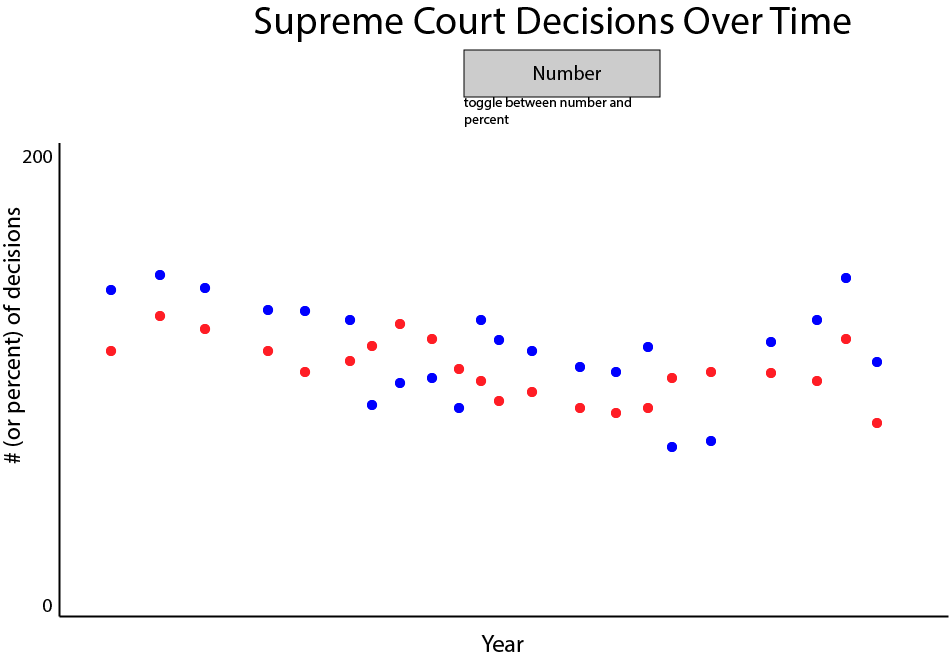

Scatterplot
Questions that can be answered:
- When has the court predominantly lean liberal or conservative?
- When has the court taken on the most cases?
- Does the above differ by issue area?
Sketch

Implemented Interactions
- Toggle between total number of cases in a year vs. percent of cases in a year
- Change the issue area
Concrete example:
- The user will view the graph, and then toggle between the two views if they feel so inclined
- The user can select either the court's entire history, or only view cases that were decided within a certain issue area
Proposed impementation path:
- Start with the scatterplot we already have
- Remove the grey "unspecified" dots from the graph
- Use the existing number aggregate data to create more data points for the percentage, not just number, of conservative/liberal cases
- Add the functionality to switch between the two views
- Implement switching issue areas